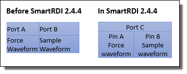

Forcing waveform on a pin and sampling on another pin
Since 2.4.4, SmartRDI supports DCS waveform() ans
samples() in the same execute().
Before SmartRDI 2.4.4, parallel forcing and sampling a waveform on two different pins can be realized by a multiport setup only.
RDI_BEGIN();
rdi.port("portA").dc().pin("A").waveform(sine).FS(100 KHz).execute();
rdi.port("portB").dc().pin("B").samples(1024).FS(100 KHz).execute();
RDI_END();In
SmartRDI 2.4.4, it is possible within one execute() on a common port. SmartRDI
will create one label for forcing and sampling a waveform in parallel on two different pins. The
FS should be the same. measWait() is supported to add a
delay between the force and measure
events.
RDI_BEGIN();
rdi.port("portC").dc().pin("A").vForce().waveform(sine).FS(100 KHz)
.pin("B").vMeas().samples(1024).FS(100 KHz)
.execute();
RDI_END();
Using
measWait():RDI_BEGIN();
rdi.port("portC").dc().pin("A").vForce().waveform(sine).FS(100 KHz)
.pin("B").vMeas().samples(1024).FS(100 KHz).measWait(10 us)
.execute();
RDI_END();The following figure gives an intuitive view of this change in codes:

Functional changes
- Introduced in SmartRDI 2.4.4